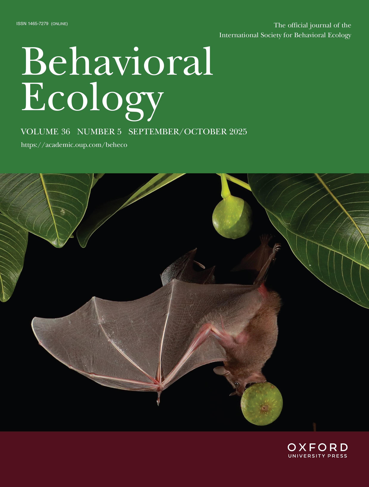
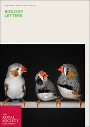

Publications
Full list of peer-reviewed articles, preprints, and conference proceedings. See also Google Scholar.
Preprints & Manuscripts in Review
Zebra finch females flexibly communicate with each other and with AI-driven acoustic interaction models
bioRxiv (submitted)
Pervasive patterns in the songs of passerine birds resemble human music universals
bioRxiv (resubmitted)
Peer-Reviewed Publications
25
A dopamine agonist affects the social decision-making of calling male túngara frogs
Hormones and Behavior
23
The ontogeny of decision-making in an eavesdropping predator
Proceedings of the Royal Society B
22
21

20
19
18
17
Learning to pause: Fidelity and biases in developmental acquisition of signal gaps
Developmental Science
16
15
Evolutionary and allometric insights into anuran auditory sensitivity and morphology
Brain, Behavior and Evolution
14
13
Covariation among multimodal components in túngara frog courtship display
Journal of Experimental Biology
12
Introductory gestures before songbird displays shaped by learning and biological predispositions
Proceedings of the Royal Society B
11
Manipulations of sensory experiences reveal mechanisms of vocal learning biases
Developmental Neurobiology
10
9
Behavioral responses to video and live presentations reveal dissociation between performance and motivational aspects
Journal of Experimental Biology
8
7
Ability to modulate birdsong across social contexts develops without imitative social learning
Biology Letters

6
5
4
3
Advantages of comparative songbird studies for understanding sensorimotor integration
Journal of Neurophysiology
2
Predicting plasticity: acute context-dependent changes predict long-term age-dependent changes
Journal of Neurophysiology
1